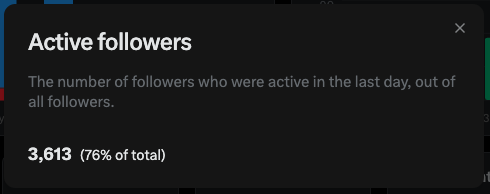

Aoi M
@aoim33
我觉得可以再引入一个功能，就是「版权警告」
类似 YouTube 的黄标
明确表明自己的内容和其他人撞车的部份
马斯克的 ai 可以藉此更好地了解原创，也提升了平台的 transparency
何乐而不为呢？

サイバー環状線
@CyberKanjousen
仅「活跃关注者占比很高」一个数据就足够了吗？環状線不以为然，认为还应当引入「有效关注者」数量。
定义「有效关注者」：可以在时间线上经常刷到你的推文的「活跃关注者」。
有相当一部分关注者虽然「正在关注」你，但由于关注者几乎不和你的推文互动，久而久之你的推文在该关注者的时间线权重降低 https://t.co/ab5XYfh7Ld